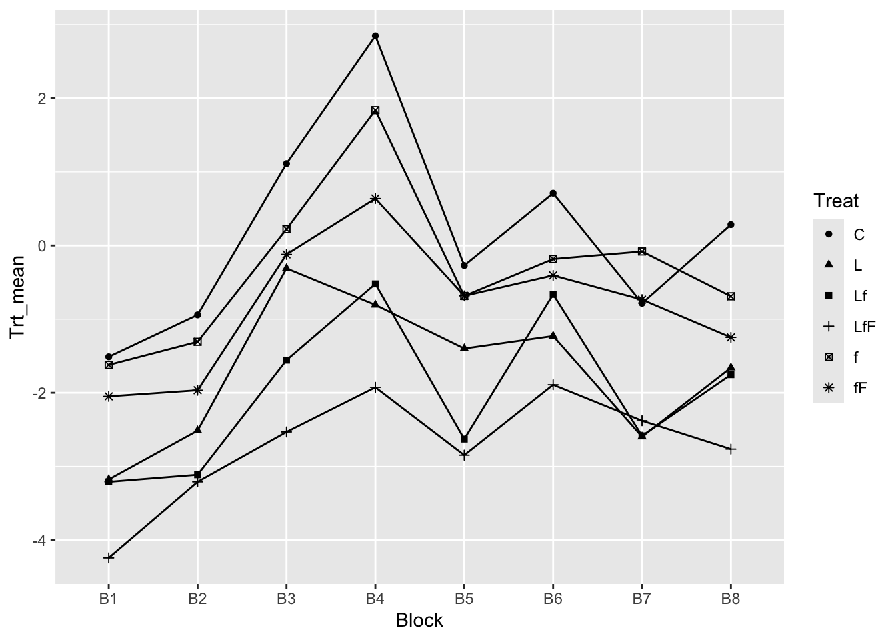

library(Sleuth3)
library(ggplot2)
library(dplyr)ST 412/512 Lab 8: Two-way ANOVA
Objectives
- Create an interaction plot.
- Estimate contrasts.
1. Setup
Download the Lab8Anova.r script from Canvas and open it in RStudio. Load the required packages. The dplyr package offers many useful data-manipulation functions.
2. Create the Data Frame
Create the seaweed data frame and add a logit-transformed response:
seaweed <- case1301
seaweed$logitCover <- with(case1301, log(Cover/(100 - Cover)))3. Interaction Plot
An interaction plot in a two-way ANOVA displays group means on the vertical axis and levels of one factor on the horizontal axis. The other factor is represented by different line types or plotting symbols.
(a) Using interaction.plot()
with(seaweed, interaction.plot(Block, Treat, response = logitCover))The first argument specifies the factor for the horizontal axis. Typically, choose the factor with the most levels (here,
Block).
(b) Using dplyr and ggplot2
First, calculate the mean response for each Block–Treatment combination.
- Group the Data:
seaweed1 <- group_by(seaweed, Block, Treat)Printing seaweed1 shows a tibble with grouping information (first by Block, then by Treat).
- Summarize the Data:
seaweed2 <- summarize(seaweed1, Trt_mean = mean(logitCover))
seaweed2# A tibble: 48 × 3
# Groups: Block [8]
Block Treat Trt_mean
<fct> <fct> <dbl>
1 B1 C -1.51
2 B1 L -3.18
3 B1 Lf -3.21
4 B1 LfF -4.24
5 B1 f -1.62
6 B1 fF -2.05
7 B2 C -0.942
8 B2 L -2.51
9 B2 Lf -3.11
10 B2 LfF -3.21
# ℹ 38 more rowsThe result is a tibble with grouping only by Block.
- Plot the Data:
ggplot(data = seaweed2, aes(x = Block, y = Trt_mean, shape = Treat)) +
geom_point() +
geom_line(aes(group = Treat))
(d) Optional: Using the Pipe Operator
The above two-step process can be streamlined with the pipe operator %>%:
seaweed %>%
group_by(Block, Treat) %>%
summarize(Trt_mean = mean(logitCover)) -> seaweed24. Estimating Contrasts
We now estimate contrasts to assess seaweed grazer effects. For example, the Large Fish contrast is given by:
\[ \frac{1}{2}\mu_{LfF} - \frac{1}{2}\mu_{Lf} + \frac{1}{2}\mu_{fF} - \frac{1}{2}\mu_{f} \]
Contrasts are linear combinations of means with coefficients that sum to 0. Here, the coefficients for the Large Fish contrast are:
\[ \frac{1}{2},\ -\frac{1}{2},\ \frac{1}{2},\ -\frac{1}{2},\ 0,\ 0 \]
corresponding to treatment means \(\mu_{LfF}\), \(\mu_{Lf}\), \(\mu_{fF}\), \(\mu_{f}\), \(\mu_{L}\), and \(\mu_{C}\).
(a) Estimating Contrasts via Sample Means
- Calculate Sample Means and Sizes:
summary(seaweed$Treat) C L Lf LfF f fF
16 16 16 16 16 16 Means <- with(seaweed, unlist(lapply(split(logitCover, Treat), mean)))
names(Means) <- names(summary(seaweed$Treat))
Means C L Lf LfF f fF
0.1804836 -1.7119924 -2.0043847 -2.7246679 -0.3136515 -0.8214197 - Estimate \(\sigma\):
Fit the model to obtain \(\sigma\):
model <- lm(logitCover ~ Treat + Block, data = seaweed)
summary(model)
Call:
lm(formula = logitCover ~ Treat + Block, data = seaweed)
Residuals:
Min 1Q Median 3Q Max
-1.43960 -0.38863 0.01354 0.32217 1.33326
Coefficients:
Estimate Std. Error t value Pr(>|t|)
(Intercept) -1.2226 0.2204 -5.548 3.37e-07 ***
TreatL -1.8925 0.2117 -8.938 8.68e-14 ***
TreatLf -2.1849 0.2117 -10.319 < 2e-16 ***
TreatLfF -2.9052 0.2117 -13.721 < 2e-16 ***
Treatf -0.4941 0.2117 -2.334 0.0220 *
TreatfF -1.0019 0.2117 -4.732 9.03e-06 ***
BlockB2 0.4600 0.2445 1.881 0.0634 .
BlockB3 2.1046 0.2445 8.608 3.97e-13 ***
BlockB4 2.9807 0.2445 12.192 < 2e-16 ***
BlockB5 1.2160 0.2445 4.974 3.49e-06 ***
BlockB6 2.0251 0.2445 8.283 1.77e-12 ***
BlockB7 1.1085 0.2445 4.534 1.93e-05 ***
BlockB8 1.3300 0.2445 5.440 5.27e-07 ***
---
Signif. codes: 0 '***' 0.001 '**' 0.01 '*' 0.05 '.' 0.1 ' ' 1
Residual standard error: 0.5989 on 83 degrees of freedom
Multiple R-squared: 0.8534, Adjusted R-squared: 0.8322
F-statistic: 40.25 on 12 and 83 DF, p-value: < 2.2e-16s <- summary(model)$sigma
s[1] 0.5988628(b) Estimate the Large Fish Contrast and Its Standard Error
ghat <- 0.5 * Means["LfF"] - 0.5 * Means["Lf"] + 0.5 * Means["fF"] - 0.5 * Means["f"]
SE_ghat <- s * sqrt((0.5)^2 / 16 + (-0.5)^2 / 16 + (0.5)^2 / 16 + (-0.5)^2 / 16)Compare these calculations with the estimates in Display 13.13 from the lab manual.
(c) Construct a 95% Confidence Interval
The degrees of freedom for the \(t\)-quantile are from the residual degrees of freedom in the model.
ci_lower <- ghat - qt(0.975, 83) * SE_ghat
ci_upper <- ghat + qt(0.975, 83) * SE_ghat
ci_lower LfF
-0.9118042 ci_upper LfF
-0.3162472 (d) Optional: Estimating All Five Contrasts Simultaneously
Redefine the contrasts attribute of the factor variable Treat using a contrast matrix $ M $.
- Create the Matrix $ M $:
M <- matrix(c(0, 0, -1/2, 1/2, -1/2, 1/2,
-1/2, -1/2, 1/2, 0, 1/2, 0,
1/3, -1/3, -1/3, -1/3, 1/3, 1/3,
1, -1, 1/2, 1/2, -1/2, -1/2,
0, 0, -1, 1, 1, -1), nrow = 6, ncol = 5)
M [,1] [,2] [,3] [,4] [,5]
[1,] 0.0 -0.5 0.3333333 1.0 0
[2,] 0.0 -0.5 -0.3333333 -1.0 0
[3,] -0.5 0.5 -0.3333333 0.5 -1
[4,] 0.5 0.0 -0.3333333 0.5 1
[5,] -0.5 0.5 0.3333333 -0.5 1
[6,] 0.5 0.0 0.3333333 -0.5 -1- Set the Contrasts for
Treat:
contrasts(seaweed$Treat) <- M %*% solve(t(M) %*% M)This instructs R to reparameterize the six groups in terms of five linearly independent contrasts.
- Estimate Parameters and Confidence Intervals:
model_contrasts <- lm(logitCover ~ Treat + Block, data = seaweed)
summary(model_contrasts)$coefficients Estimate Std. Error t value Pr(>|t|)
(Intercept) -2.63573255 0.1728768 -15.2463059 8.744201e-26
Treat1 -0.61402573 0.1497157 -4.1012782 9.539869e-05
Treat2 -0.39326371 0.1497157 -2.6267366 1.026464e-02
Treat3 1.82881916 0.1222424 14.9606013 2.778453e-25
Treat4 0.09548527 0.2593152 0.3682209 7.136460e-01
Treat5 -0.21251501 0.2994314 -0.7097286 4.798616e-01
BlockB2 0.45997017 0.2444847 1.8813862 6.342524e-02
BlockB3 2.10462971 0.2444847 8.6084307 3.967901e-13
BlockB4 2.98070960 0.2444847 12.1918036 3.440293e-20
BlockB5 1.21603709 0.2444847 4.9738778 3.491656e-06
BlockB6 2.02513052 0.2444847 8.2832603 1.772265e-12
BlockB7 1.10850715 0.2444847 4.5340551 1.928506e-05
BlockB8 1.33003266 0.2444847 5.4401465 5.267230e-07confint(model_contrasts) 2.5 % 97.5 %
(Intercept) -2.97957755 -2.29188755
Treat1 -0.91180423 -0.31624722
Treat2 -0.69104222 -0.09548521
Treat3 1.58568403 2.07195429
Treat4 -0.42028223 0.61125277
Treat5 -0.80807202 0.38304200
BlockB2 -0.02630009 0.94624043
BlockB3 1.61835945 2.59089997
BlockB4 2.49443934 3.46697986
BlockB5 0.72976683 1.70230735
BlockB6 1.53886026 2.51140078
BlockB7 0.62223689 1.59477741
BlockB8 0.84376240 1.81630292Verify that these estimates agree with Display 13.13.
- Restore the Original Contrasts:
Indicators <- contr.treatment(6)
colnames(Indicators) <- names(Means)[-1]
contrasts(seaweed$Treat) <- IndicatorsThe second command assigns names to the indicator variables for clarity.